Fixing the tachometer LCD in a MINI (R50, 2001 MINI One).
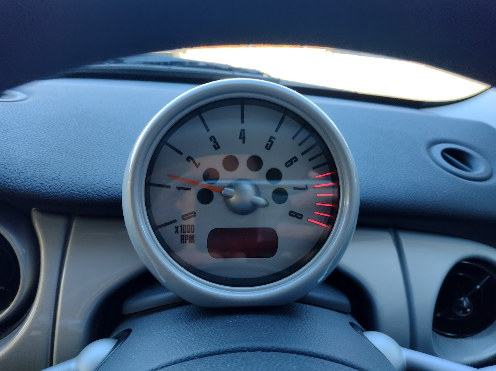
Problem
For most of the life of the car (20 years at the time of writing) the temperature readout on the tachometer hasn't worked.
While the loss of this unessential feature didn't seem worth fixing to the previous owner (and rightly so),
I could hardly call myself an engineer if I wasn't going to have a poke around.
An optional extra for the MINI, the "on board computer, OBC"
includes automatic MPG calculation, additional controls on the left stalk and some variation of speed and range readouts.
I don't have that, just the simple temperature gauge.
I got the sense from a few
YouTube videos that it was likely to be an issue inside the display module rather than a problem at the other end of the CAN bus.
Some people have had success in swapping their modules so I thought it was worth a try.
In my case, the LCD is totally blank but some people have had weird corrupted output, which further suggests a problem local to the display module.
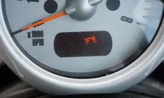
Photo credit:
Tony Repairs on YouTube.
First job was to remove the original one and check the part number. This was a nice 5 minute job for the lunch break.
I noticed that the original one wasn't
sitting flat and that there were gaps between the plastic parts.
Anyway...
- Release the steering wheel height adjustment lever.
- Drop the wheel into the lowest possible position.
- Lock the steering wheel once again.
- Undo the two Torx T20 screws behind the tachometer and lift it free.
- Unplugging it is very intuitive affair, although I didn't need to do it at this stage.
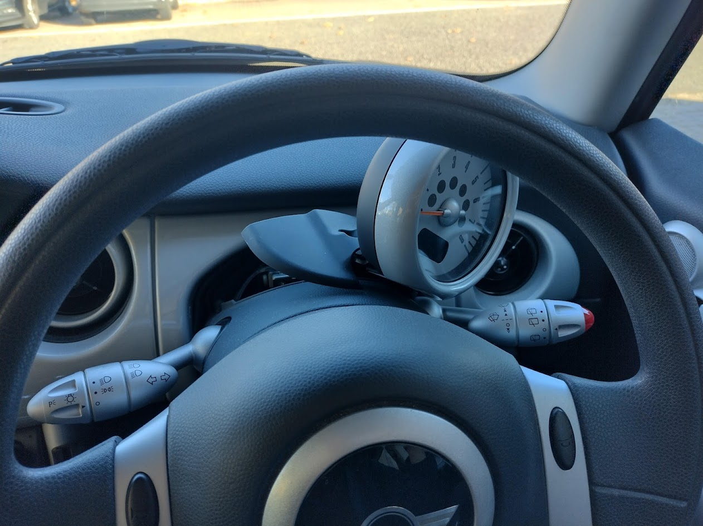
It was quite clear that a 'mechanic' has had this off already for a look and in the process,
mangled the rubber vibration damping sheet and overtightened the screws so as to
crush the living daylights out of the plastic.
As if I needed any more reason to do my own servicing?
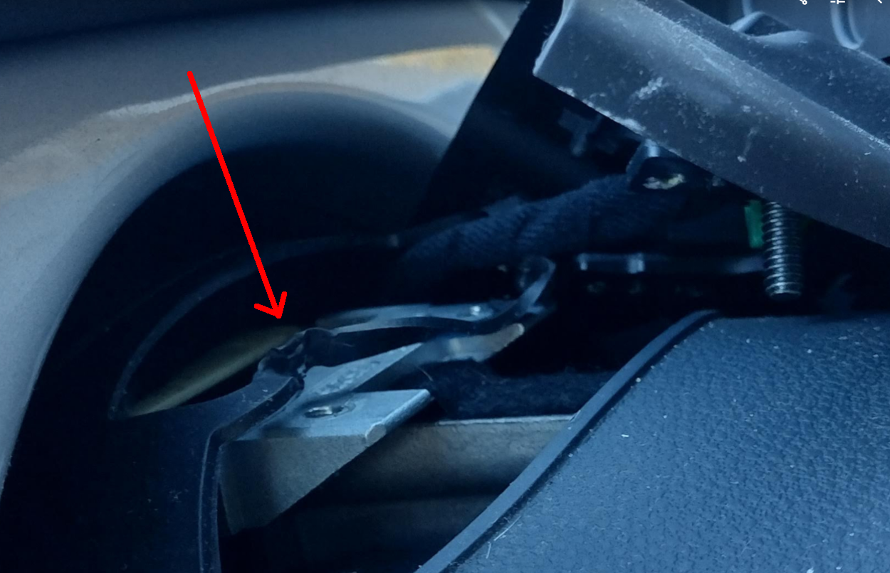
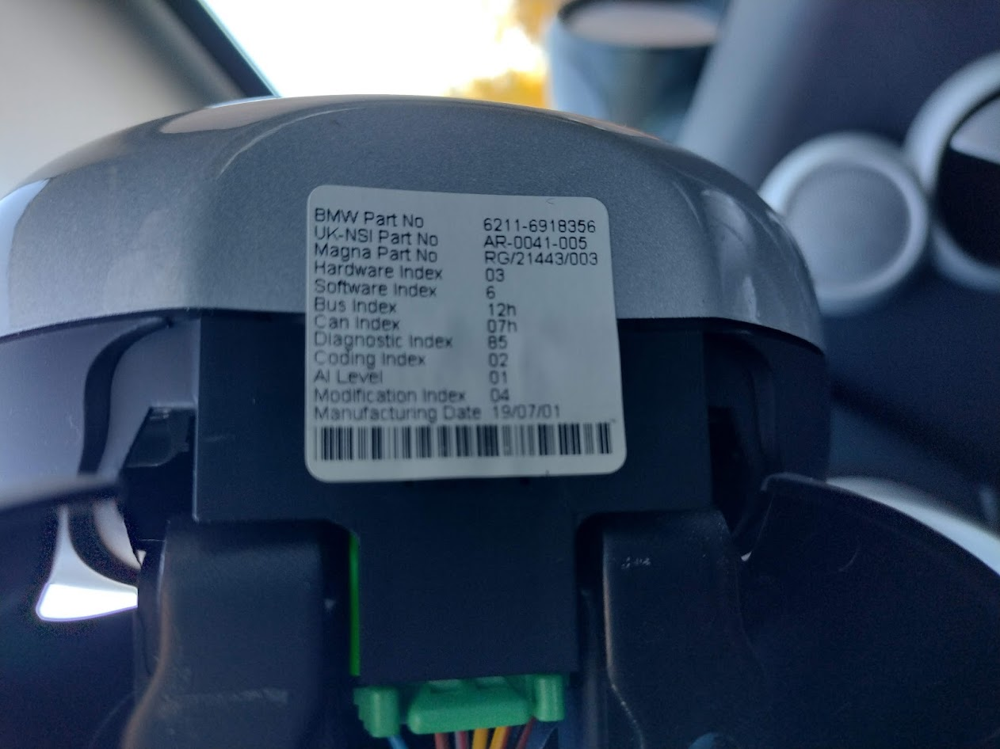
I got a quote from the local BMW dealer, Dick Lovett. They offered to sell me a new tachometer for £335.84 or fit one for £515.64.
Now, as much as I would love to spend half the value of the car on a
damn thermometer,
I'm not a
total moron.
There are a few variations on part number and I'm not certain what all the code details mean.
For £22.99, I've got nothing
to loose?
The replacement part also came with the plastic surrounds which, like the tachometer itself, were in absolutely mint condition.
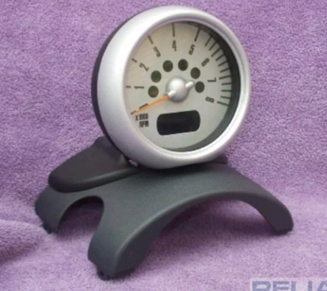
After swapping the part (plastic surrounds included) the new one sits perfectly and looks as good as new.
Although technically better than new, seeing as "new" for this MINI included some poorly designed electronics.
Oh, and it works!
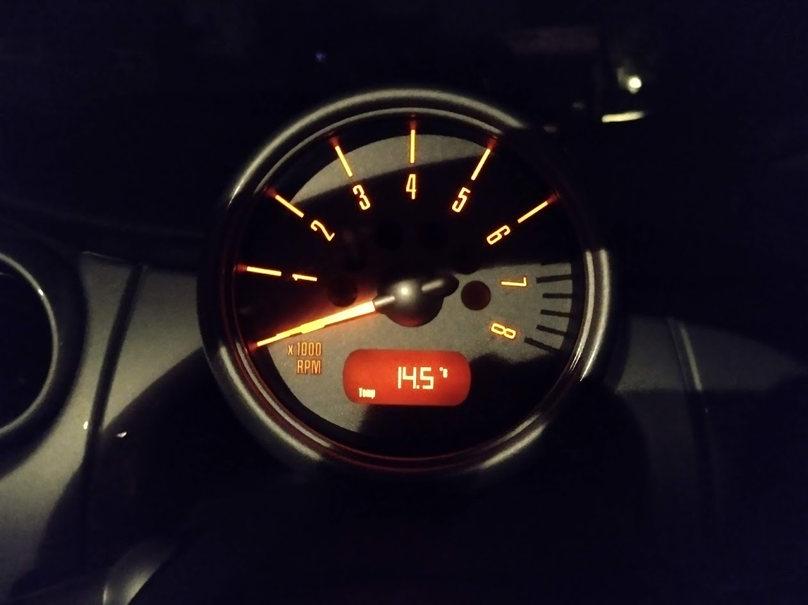
PCB
For anyone wanting to attempt a
repair on their existing module, here is the back side of the broken PCB.
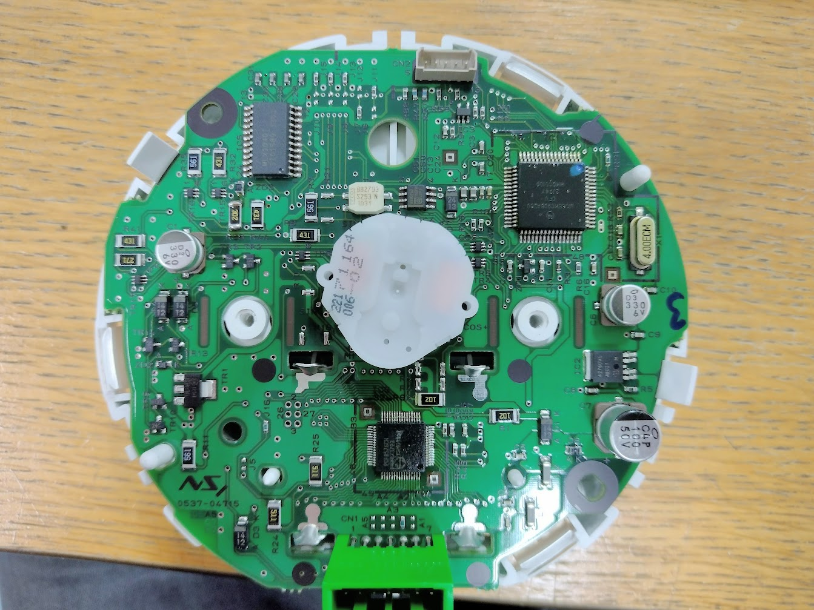
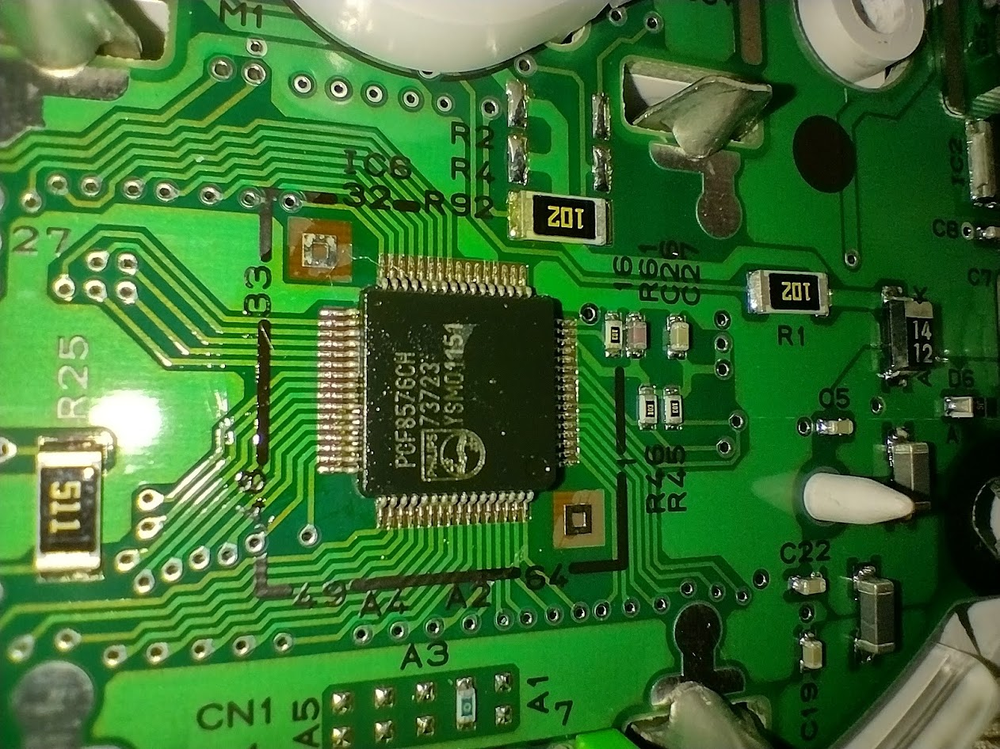
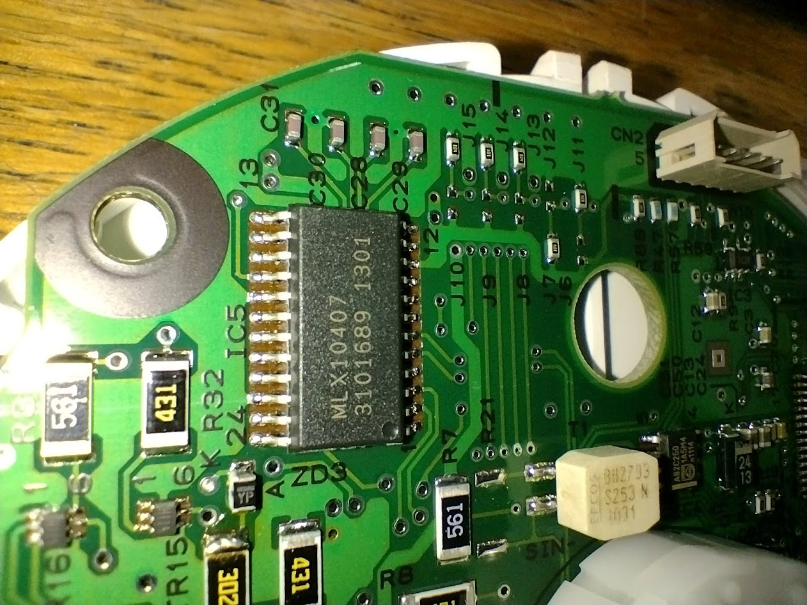
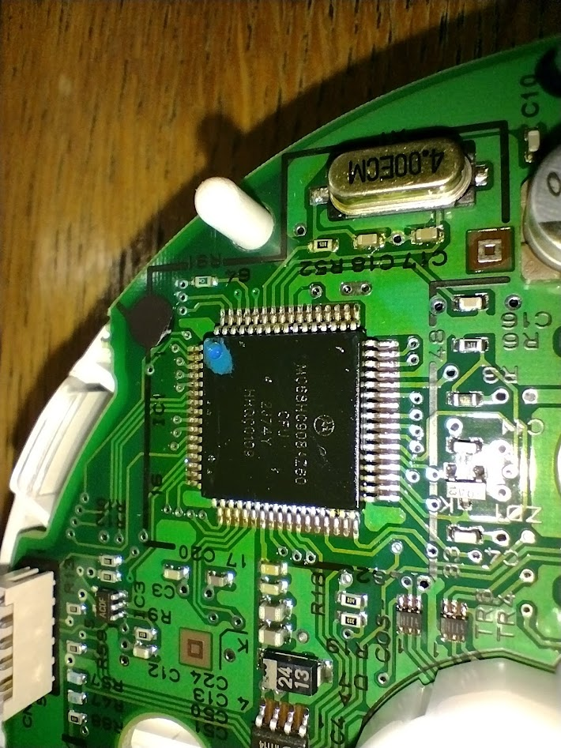
© James Baber 2022.
{kind=link}
{kind=link}
{kind=link}